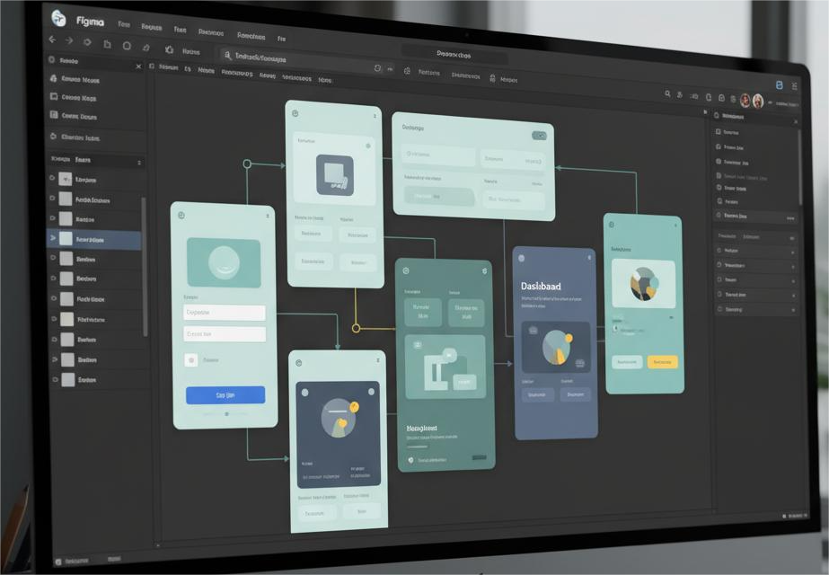
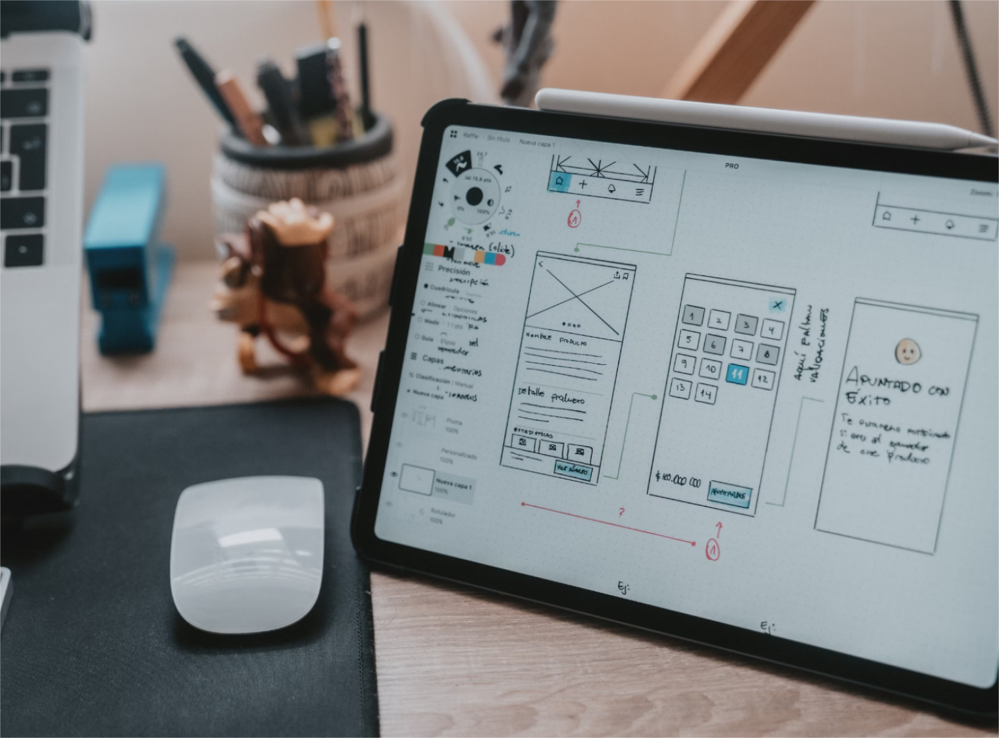

Hành trình từ Developer sang UI/UX Designer

Khi còn là một developer, tôi luôn say mê việc biến những dòng code thành thứ gì đó hữu hình. Nhưng càng làm, tôi càng nhận ra mình dành nhiều thời gian để chỉnh màu, căn lề, và nghĩ cách khiến giao diện “cảm giác đúng hơn” — chứ không chỉ hoạt động đúng.
Có lẽ đó là lúc hạt giống của UI/UX trong tôi bắt đầu nảy mầm.
💡 Bước ngoặt đầu tiên
Tôi bắt đầu tìm hiểu về thiết kế trải nghiệm người dùng. Ban đầu, mọi thứ khá mơ hồ — UI, UX, Wireframe, Prototype, Accessibility... Tất cả đều mới mẻ. Nhưng càng đọc, càng xem các case study trên Behance hay Dribbble, tôi càng bị thu hút.
“Thiết kế không chỉ là cách nó trông như thế nào, mà còn là cách nó hoạt động.” – Phát Minh
Tôi thử học Figma, tự thiết kế lại vài ứng dụng mình yêu thích, đôi khi chỉ để hiểu “tại sao họ lại đặt nút đó ở vị trí này?”. Mỗi lần thử và sai, tôi lại học được thêm một chút — về bố cục, tương phản, và cảm xúc người dùng.

🧩 Khi kỹ thuật gặp cảm xúc
Nền tảng developer giúp tôi có cái nhìn khác về thiết kế. Tôi hiểu giới hạn của trình duyệt, hiểu animation nào quá nặng, hay vì sao một layout có thể khó responsive. Nhờ vậy, thiết kế của tôi không chỉ đẹp mà còn khả thi.
Tôi dần nhận ra: UX tốt không chỉ là đẹp, mà là sự hài hòa giữa trải nghiệm, kỹ thuật và cảm xúc.
🎯 Quy trình học và làm thực tế
Tôi bắt đầu với các dự án nhỏ: thiết kế lại giao diện đăng nhập, màn hình onboarding, hay đơn giản là một form feedback. Tôi học cách xây dựng user flow, vẽ wireframe, rồi chuyển sang hi-fi prototype.
- 📍 Nghiên cứu người dùng – hiểu vấn đề thực sự họ gặp phải
- 📍 Phác thảo luồng trải nghiệm và hành trình người dùng
- 📍 Thiết kế giao diện với hệ thống màu, font và component thống nhất
- 📍 Kiểm thử và lắng nghe phản hồi
🎨 Bài học từ những lần thử sai
Tôi từng nghĩ UI/UX chỉ cần thẩm mỹ. Nhưng sau vài dự án, tôi nhận ra điều quan trọng nhất là hiểu người dùng. Một giao diện gọn gàng chưa chắc dễ hiểu — đôi khi cần thử nghiệm, lắng nghe phản hồi, và chấp nhận điều chỉnh.
“Một thiết kế tốt là khi người dùng không cần phải nghĩ.” – Phát Minh
Chính sự kiên nhẫn trong code ngày xưa giúp tôi bền bỉ hơn trong quá trình học thiết kế. Tôi không còn ngại làm lại, vì mỗi lần như thế là một lần trưởng thành.
🚀 Hiện tại và chặng đường phía trước
Giờ đây, tôi vẫn đang trên hành trình rèn luyện để trở thành UI/UX Designer — người kết nối giữa công nghệ và con người. Tôi học cách đặt mình vào vị trí người dùng, quan sát, đặt câu hỏi và không ngừng cải thiện.
Tôi tin rằng, giữa công nghệ và cảm xúc, luôn tồn tại một điểm giao — nơi người dùng cảm thấy được thấu hiểu. Và tôi muốn đứng ở đó.

🌱 Kết luận nhỏ
Mỗi bước chuyển nghề đều có những khó khăn riêng, nhưng nếu bạn đi bằng đam mê và học hỏi, bạn sẽ tìm thấy niềm vui trên con đường đó. Với tôi, UI/UX không chỉ là nghề, mà là cách tôi kết nối thế giới bằng cảm xúc và công nghệ.